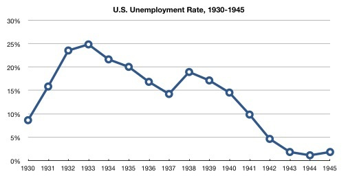
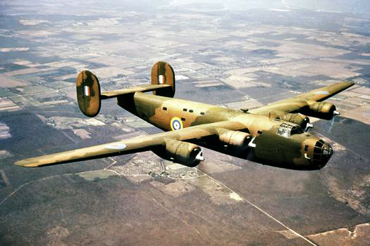
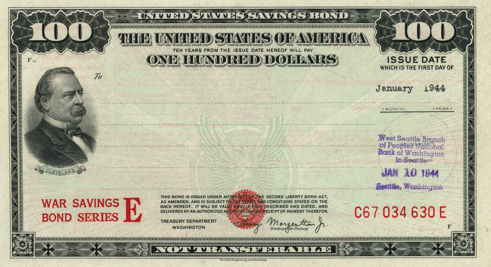

World War Two was beginning around the end of the Great Depression. The Great Depression was about ten years long and it was caused by the Stock Market Crash of 1929. A depression is when there is a contraction in economic activity. This basically means, that businesses aren’t selling as much as they were before, which furthermore means that the demand for certain products had lowered. The result of the Great Depression was that the global economy shrank by nearly 25%. The Great Depression caused many to lose their jobs, which meant many went hungry and couldn’t support things financially.
The graph above shows the unemployment rate through the 1930s into the mid-1940s. It shows how the unemployment rate peaked at nearly 25% in the United States in 1933. This means that there were a lot of people out of work. This was on peak in the graph, and then the rate began to fall, until rising slightly in 1938. The graph shows a direct correlation between decreasing unemployment rates and the United States entering WWII. Although war is never a good thing, WWII being the worst war of them all, the war helped the United States economy bounce back from the depression. The fascinating part about all this was that towards the end of the war, the unemployment rate sank to nearly 1%, which shows the amount of work that was needed to support the war effort. When the United States joined the war, there was an increased demand for supplies to fight such as weapons, vehicles, ammunition, etc.
A couple of months before the US entered the war, many US factories changed their production lines to produce the necessary items for the United States to go to war. For example, the Ford Motor Company located in Detroit Michigan, converted their production lines to make B-24 Liberators.
This gave the need for new workers at these factories to meet demand. The demand for the unemployed was not the only demand that was needed, other groups were able to get jobs as well such as teens who just turned 18 and many minority groups. This set up for a good recovery from the depression. People were glad to be working and making a living again.
The war began to come to an end in 1945. The government began programs to help pay for the war. One specific thing they did was start the war savings bonds program. Bonds are used to helping pay for debt or raise money for something and they are typically used by a government. People can buy bonds and hold them until they mature. Two common bonds that the US government issues are Series EE and Series Is
Not only were people investing in savings bonds, but they also were buying homes, cars, starting families, and much more. Wartime restrictions on metals, fuels, and other necessities for war were also lifted allowing companies to once again switch their production lines to make consumer products again. This led to a lot more innovation in the consumer world with household appliances and more. Overall, even though WWII is looked at as being dark and sad, it still is, but looking into the good that came out of it brightens the topic. A good question to ask would be what would the US economy look like without the war, would it look the same, would it be different? The war helped people get back to work and placed the US back onto its feet.